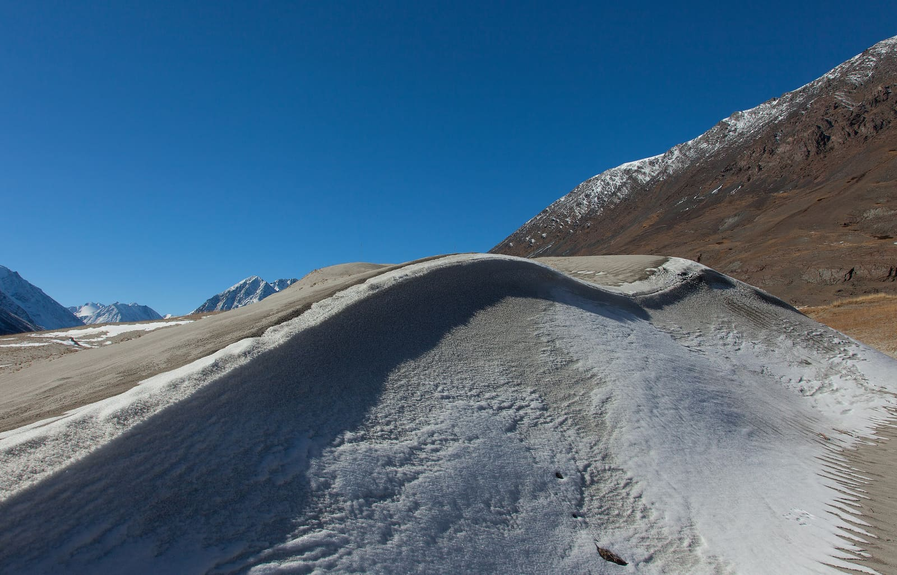
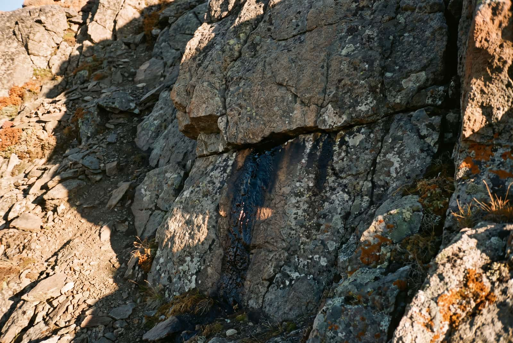
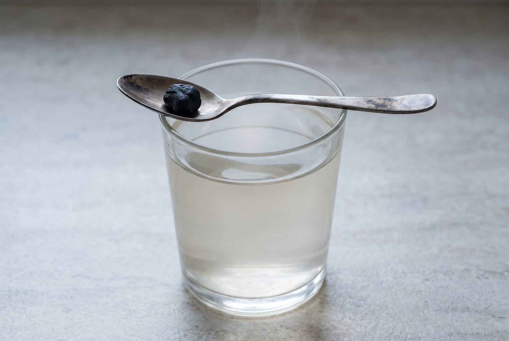
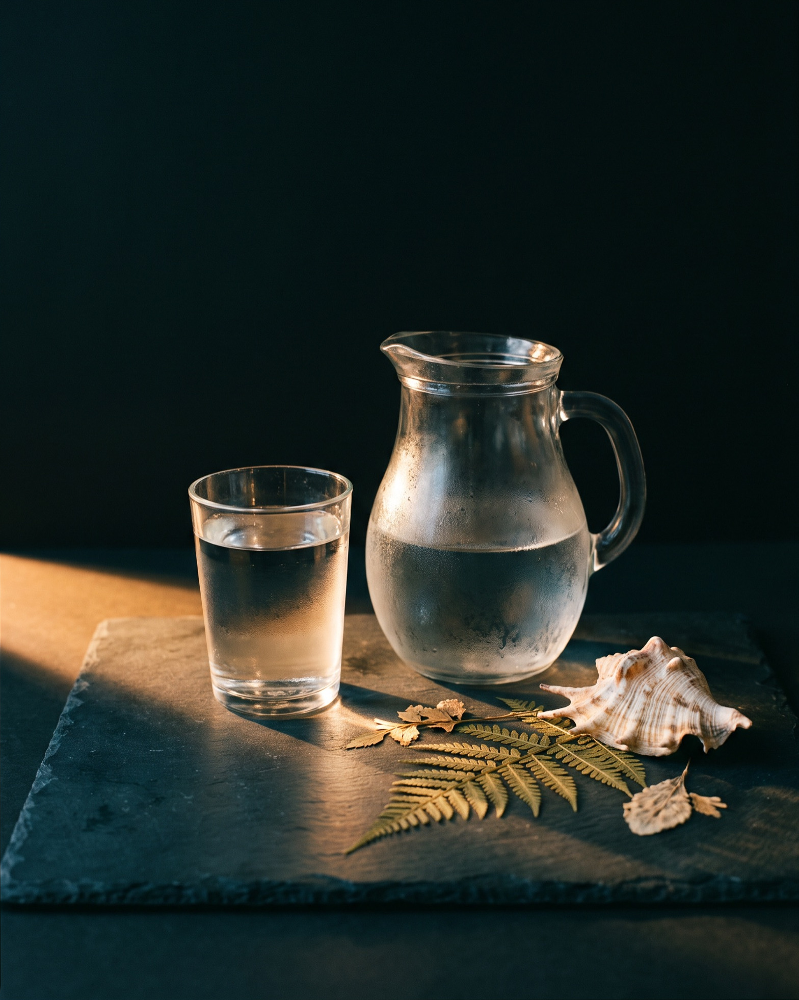

Shilajit · Ingredient notes
What shilajit is, and how to take a resin.
It is not a plant and not a mushroom. It seeps out of mountain rock, and it arrives in a jar with two words on the label doing most of the work: dual-extracted and lab tested. Here is what those two words cover, what they leave out, and how a portion the size of a pea is supposed to work.
By Reiss Davies Ausar5 September 20269 minute read

People ask me about shilajit more than anything else on the shelf, and almost always in the same order. What is it. Is it worth forty pounds. How do I take it. The first question is the one nobody answers properly online, so I will start there, and I will tell you at the outset that a good deal of this article is about what my own label does not say.
I sell it. I would still rather you read this before you buy it than after.
01What it actually is
Shilajit is a resin. Not an extract of a herb, not a milled mushroom, not a powder somebody pressed into a block. It comes out of rock.
Mountains are made where two plates in the earth's crust collide and push the ground upwards. In some of those ranges, a dark, tacky material works its way out of cracks in the rock, and that material is what gets collected and sold as shilajit. It is found in more than one mountain region on earth. Mine comes from one of them and I will get to which.
Ask three people how it forms down there and you will get three answers, some of them confident. I am a herbalist and a shopkeeper, not a geologist, and I am not going to pick a version for you and print it as though I knew. What I can tell you is where this jar came from, what the label says was done to it, and what is missing from that label.

The other thing you will see quoted everywhere is an age. More than four thousand years of recorded use, usually. I cannot check that figure and neither can you, so treat it as tradition rather than as a date. And notice what it does not do: an old material with a long history is still an unknown jar until somebody prints something measurable on it.
02The Altai, and why a range belongs on the label
My jar says Altai Mountains. That is a real range with a name you can look up, and it is more than most jars will give you.
The phrase to be wary of is mountain sourced. It sounds like provenance and it is not. Shilajit is by definition mountain sourced, so a jar that says only that has told you nothing you could check, and nothing you could ask a follow-up question about. A named range gives you at least one thread to pull.
Mountain sourced is not provenance. Every jar of this is mountain sourced.
What I do not have on my page is a chain of custody: the collection site, the collectors, the date it came off the mountain. I am not going to write one to make the page look better. If you want to know how far back my supply is documented, ring the shop and ask me, and you will get the honest answer including the parts I do not have.
03Dual-extracted, and what the phrase leaves out
Extraction, plainly: you put a raw material into a solvent, the solvent takes some of what is in the material into itself, and then you separate the two and keep the solvent side. Different solvents take different things. Water takes one set of compounds, alcohol takes another set, and the overlap between them is not complete.
Dual extraction, as the phrase is normally used, means two solvents run one after the other rather than one on its own, so that you finish with both fractions instead of only the one. That is the whole of the definition. With a resin out of rock there is also the plain business of separating the material from the grit and debris it comes out with, which is the part I would not want to skip.
Now the part I would want to know if I were buying. Dual-extracted does not tell you which two solvents were used on this batch, at what temperature, for how long, how many passes, or how much raw material went in for the weight that came out. There is no legal definition of the phrase to fall back on either. My label does not carry any of that detail, so on my own page the words are a category rather than a method you have seen. Ask me for what I know about it and you will get what I know, which is not everything.
04Lab tested, and what the test is for
This is the section to read if you read only one.
The reason a shilajit gets tested is not to prove it is good. It is that the material comes out of rock, and rock carries what rock carries. Testing on a resin like this is a heavy-metal test: lead, arsenic, mercury and cadmium. That is the question, and it is a real one, which is why any seller who has done the work will not mind being asked.
Two words on a label are not a result. Lab tested tells you a test happened. It does not tell you when, on which batch, at which laboratory, by which method, or what came back. A certificate does, and a certificate is a document with a batch number on it.

I do not publish a certificate on this site. I would rather write that sentence than leave you assuming otherwise, because the whole of the rest of this article is me telling you to ask for one. Ring the shop and ask for the analysis on the batch you are buying. If a seller cannot produce it, or sends you a certificate with no batch number on it, that is your answer.
The same point covers raw resin, by the way. A lump bought loose off a stall, or brought back from a trip by somebody who was assured it was the real thing, has had none of this done to it. It is cheaper for a reason. Purifying it and testing it is most of what you are paying for in a jar.
05What my own label does not say
Here is my jar, audited by me, with the gaps left in.
| Origin | Printed. Altai Mountains, a named range. |
|---|---|
| Preparation | Printed only as a category. Dual-extracted, with no solvents, temperature or number of passes given. |
| Testing | Printed as a category. Lab tested, with no certificate published on this site, so no figures you can read. |
| Minerals | Not printed, deliberately. I hold no measured figure for this jar, so there is no list of mineral names on my page. A list of names with no amounts against it is decoration. |
| Portion | Printed as a pea. A pea is not a unit. Nobody weighs it, so there is no gram figure for a serving. |
| Storage | Not printed. There is no storage instruction and no shelf life on this jar. |
| The jar itself | Not photographed. The pack shot I hold carries wording I am not willing to publish, so it stays off the site until the label is reprinted, the same as the pouch on Decolonise. |
| Weight and price | Printed. 50 g, in an amber glass jar, £39.99. Both of those you can check before you hand any money over. |
Two lines on that table are complete: the range it came from, and the weight and price on the jar. The other six are a category, a blank, or a picture I will not publish. I could fill several of them in tomorrow by writing something plausible, and most shilajit pages do exactly that. The mineral list is the worst of it. Long columns of names, no amounts against any of them, and the reader comes away with an impression that no measurement stands behind. I will not print a list I cannot put a number next to, and if a number ever exists for my batch, it will go on the specification sheet where you can find it.
What I am also not allowed to do, and would not do anyway, is tell you what any of it does once you have drunk it. That is a claim, it needs evidence I do not have, and the law is right about it.
06How to take a resin
The serving is a pea-sized portion, once a day, in the morning, stirred into 300 to 500 ml of warm water until it has dissolved.


Three practical notes on that.
- Warm, not boiling. The instruction says warm water because the resin needs to go into it, and because you have to be able to drink the glass.
- The portion is not a dose. A pea is a description of a size, and it is the most honest thing on the jar in one sense and the least useful in another. If you want to know how many grams you are taking, weigh it yourself, because I have not printed a figure and I am not going to.
- One a day. If you missed yesterday, do not take two today to catch up. That is a rule I would apply to anything on my shelf.
On price per day: 50 g at one portion a day comes out at about two months, which is roughly 67p a day. Both of those numbers rest on a portion nobody has weighed, so treat them as the approximation they are.
There is no stop date printed on this jar, unlike Decolonise, where the pack tells you to leave four months between courses. That is a statement about what is on the two labels, not a suggestion from me that you take anything for ever.
07Who should not take it
Short list, and I would rather lose the sale than have you skip it.
- Children. No. Keep it out of their reach along with everything else.
- Pregnant or nursing. Ask your GP or midwife before you start anything, and this included.
- On prescribed medication. Ask your GP or pharmacist first.
- Anyone told to keep track of a particular mineral. This is a jar with no measured figures on it, so there is nothing here for you to count. That is a reason to leave it, not a reason to guess.
- Untested resin, from anywhere. Not a category of person, but it belongs on this list. See section four.
None of this is medical advice. It is the set of questions I ask across the counter before I sell anyone a jar, and I would ask you the same ones.
08Which jar
The resin described above, and the three things people most often buy alongside it.
Shilajit Resin
£39.99The jar in this article. Dual-extracted Altai resin, 50 g in amber glass. One pea-sized portion a day in warm water. The specification sheet includes what is not printed on it.
Read the sheet
Northern Soul
from £34.99The daily one. Cold-water Chondrus crispus gel with four algae from three families. 300 ml or 500 ml, one tablespoon each morning.
Choose a size
Seaking
£39.99The one with a figure on it. 50 capsules at 800 mg, 75 µg of iodine in each. If measured amounts are what you want from a shelf, start here.
Add to bag
Chondrus Crispus
£34.99The plain gel. One alga, water and Omega DHA oil, in a glass jar. The simplest declared list in the shop after the resin.
Add to bagIf you want the certificate before you decide, ring 07946 806533 or come into the shop on Smithdown Road, Tuesday to Sunday, and ask me for it at the counter. Bring the jar you bought elsewhere as well, if you have one, and we will read both labels together.

Reiss Davies Ausar
Founder and formulator at Herbase. Trading online since 2019 and behind the counter at 599 Smithdown Road, Liverpool, since August 2024. Author of three books on herbal practice. Book an hour with him if you want to go into more detail.